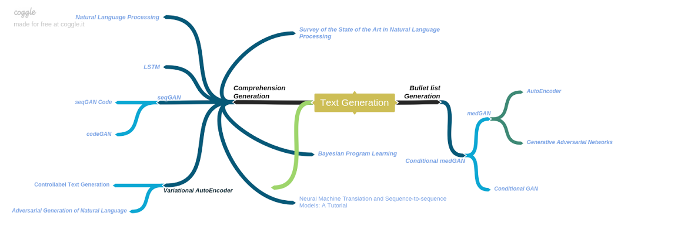

Raj Derasari
Summary
Profile:
- Engineering Undergraduate: B.Tech, Information and Communication Technology / B.Tech, ICT.
- Undergraduate: SEAS (Formerly IET), Ahmedabad University (2014-2018).
- Areas of Interest: Software Development, Data Science, Machine Learning and DevOps
- Experience: 1 year of industry internship, and 3 months of freelance technical writing.
- Looking for education opportunities (technical post-graduate in CS, ML or Data Science) to initialize my career
- Skills: Python, Linux Shell, C/C++, Matlab/GNU Octave, Java, R/RStudio
- Hobbies: Gaming (played CS 1.6, CS:GO for 7 years as of 2018), and Music/Audio mixing, creating awesome tracks (I can survive without eating, but not without Linkin Park or Avenged Sevenfold!)
- Technical Capabilities: If my friends paid me for tech support, I could afford rent in Silicon Valley.
Detailed Curriculum Vitae @GoogleDrive.
Description
Growing up around computers has led to me spending the majority of my life in front of computers (no regrets!), eventually writing my first C program when I was 13, and thus I developed various interests in Information Technology and Computer Science. In 2014, I secured admission into the Bachelor of Technology program at the School of Engineering and Applied Science (SEAS, formerly known as Institute of Engineering and Technology / IET), Ahmedabad University. The robust project-based curriculum enabled my capabilities of teamwork, leadership and time management, along with the development of my technical skill-set.
In Semester 7 of my undergraduate, I started my B.Tech project/internship at Hirevalley Inc in a team of 4 (codenamed "MARS" from our initials). I developed a passion for Python and Linux Shell, working on Machine Learning (Generative Adversarial Networks for correlated data generation) and learning DevOps methodologies. This one-year internship was an extension to the platform for Human Capital Management (HCM) by our seniors. The platform in context is a microservice-based scalable architecture, and provides a benchmarking score for evaluation and comparison of candidate/job profiles. We develop algorithms and scoring techniques for candidate-to-job, candidate-to-candidate, job-to-candidate, and job-to-job comparison requirements.

At the same time, we began an endeavor to generate appropriate resume data, for testing the system. Our research in correlated data generation started with a goal to generate resume descriptions that would contain correlated skills and thus, interdependent sentences. We document our endeavors in Natural Language Generation over here, also developing a novel technique GrammarGAN for generating sentences with the Part-Of-Speech tag (POS tag) and seed word as inputs. Our research in correlated data generation for skill recommendation was accepted as a research paper in the 2nd workshop for Data Science for Human Capital Management in 2018.
I have also used C/C++ in various academic projects (Operating Systems, Embedded Systems, Computer Networks, etc.), and for competitive programming in 2017. Since then, however, I instead worked on projects such as Ubuntu Configuration Scripts for Default/LiveCD and Easy GRUB Installation Script. (During the 100+ times I dual booted Linux and Windows, I often found myself repeating the GRUB Reinstall, motivating me to create this.) Similarly, I learned web-scraping with BeautifulSoup and wrote a Downloader Script for some supported software which I found myself frequently downloading.
Experience
Freelance Technical Writer
After completing my undergrad, I spent some time as a part-time technical content writer, for articles in Data Science (Neural Networks with sklearn, Linear Discriminant Analysis / LDA), and DevOps (Introduction, Test-Driven Development / TDD, and Cloud-Native Architecture). Along with content-writing, I spent time on my aforementioned personal projects.
Technologies used:
- Python
- Linux Shell
- JavaScript
Research and Development Intern
At Hirevalley, I worked in a team of 4. We designed and implemented a product for increasing automation in Human Capital Management, deployed through Python, on Amazon Web Services (AWS). The product was a recommendation platform for automation. [Experience certificate uploaded here]. I also developed my passion for DevOps and Data Science while working here.
Takeaways:
- Considerable experience with Python and industrial coding practices.
- Learning security with ssh-keys, for a local GitLab server I deployed, and deployment on AWS.
- Using FLASK in Python for creating services and sending/receiving data.
- Lessons in Machine Learning with Tensorflow/Keras, and approaches for Natural Language Generation.
Technologies used:
- Linux,Shell
- Python
- Flask
- Tensorflow
- Keras
- Git
- GitLab
- AWS SQS
- AWS RDS
- SSH
- MySQL
- VNC
- Nvidia Docker
- Nvidia GPU Setup
- LaTeX TexStudio
Personal Projects
-
Ubuntu Setup/Configuration Scripts for Default/LiveCD Modes
Extremely configurable, reusable, modular setup scripts for configuration of any Ubuntu/Debian-based installation. I also developed provisions to dry-run scripts and to store the output chain of commands to a file, very useful in creating shorter scripts to run during configuration of a LiveCD Ubuntu environment. In essence, I used these scripts to build my own/customized Lubuntu ISO (Based on Lubuntu 18.04 ). It had provisions such as removed bloatware, improved startup time, latest and relevant software for programming such as Sublime Text, Java, Python Virtualenv, Git, LibreOffice, etc.
Available on GitHub -
Easy GRUB Reinstall
I wrote and updated a BASH script for Debian/Ubuntu based installations, over a period of 3 months. If you ever find yourself having to reinstall GRUB on a machine (like I've had to, more than 50 times), this script makes everything much easier. All you must do is boot into a Live Linux installation, open the terminal and type in this command:
$ wget -qo- https://raw.githubusercontent.com/raj-derasari/My-Ubuntu-Setup-Scripts/master/other/grub_reinstall.sh
And then run the script with bash ($ bash grub_reinstall.sh), just having to enter the source Linux environment and target device to install to.
Available on GitHub
Skills & Tools
- Python
- Linux Shell
- C/C++
- Java SE
- Matlab/GNU Octave
- Tensorflow/Keras
- R/RStudio
- LaTeX/TexStudio
- Microsoft Office
Other
- Docker
- Nvidia GPU Configuration/Setup
- GitLab
- Git
- SSHFS/SSH
- Virtualization
- Citrix XenServer
Education
- B.Tech in Information and Communication TechnologySchool of Engineering and Applied Science, Ahmedabad University, India2014 - 2018GPA: 3.29/4.33
- Higher Secondary EducationTulip International School, Ahmedabad2012 - 2014Percentage:85%
Publication
-
DSHCM 2018"Correlated Data Generation and its Application for Skill Recommendation", S. Patel, A. Kakadiya, M. Mehta, R. Derasari, R. Patel, R. Gandhi, in Springer Journal.
Languages
- English (Professional Fluency)
- Hindi (Native)
- Gujarati (Native)
- Sanskrit (Education, 3 years)
How I Use Free Time
- Reddit (way too much)
- Music
- Comics/Drawing
- Gaming